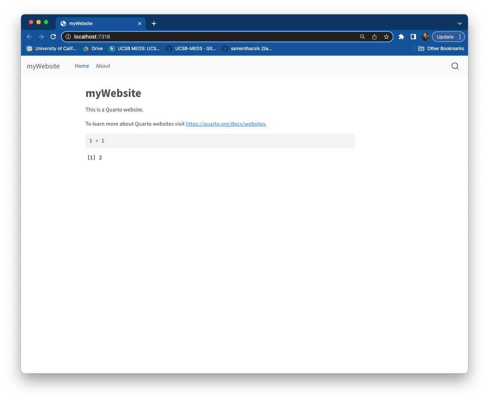
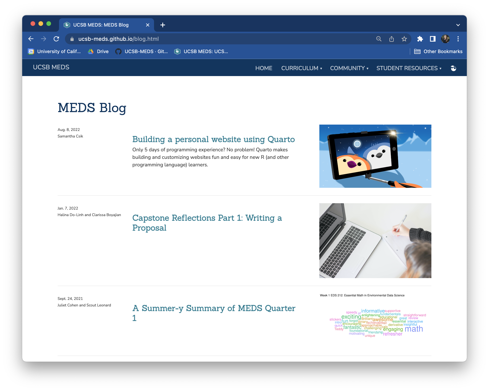
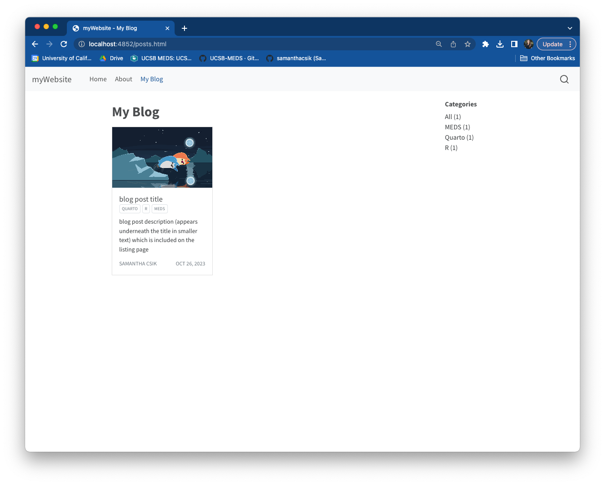
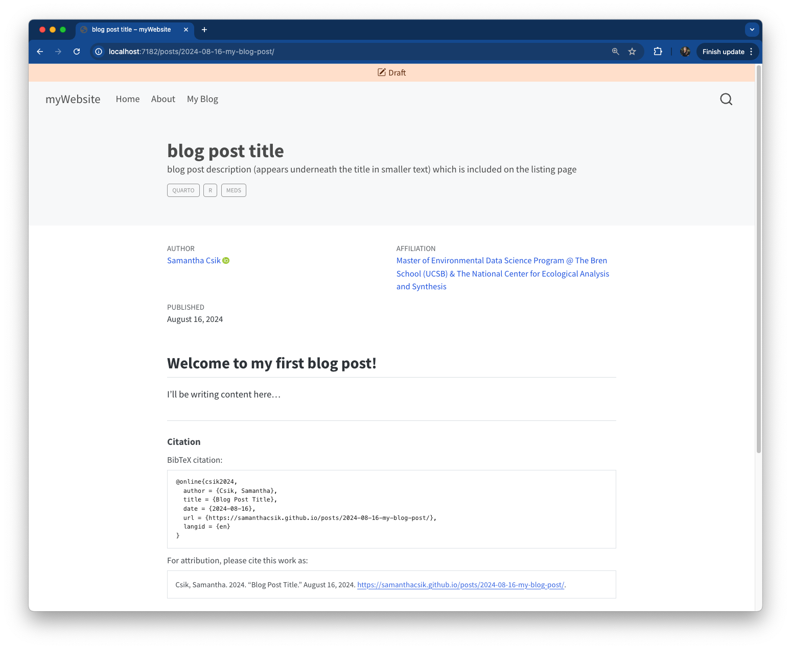
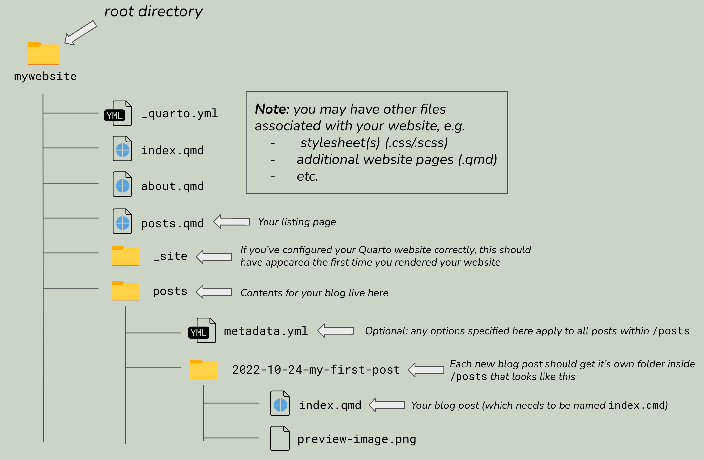

![]()
# options specified here will apply to all posts in this folder
# prevents posts from re-rendering unless explicitly told to do so (for more, see https://quarto.org/docs/projects/code-execution.html#freeze)
freeze: true
# enable banner style title blocks (see https://quarto.org/docs/authoring/title-blocks.html)
title-block-banner: trueAbout a year ago, I wrote my first ever blog post ~ about blogging ~ and tbh I’m a little embarrassed that this is only my third post here (does it count that I have ideas for blog posts squirreled away at least?? ). Regardless, you should trust me1 when I say that blogging is a great exercise for you to practice as regularly as you can – it can help you to:
build your online profile/portfolio
- “…sharing anything is almost always better than sharing nothing” -
@drobin his post, Advice to aspiring data scientists: start a blog
- “…sharing anything is almost always better than sharing nothing” -
practice your writing & communication skills
stay atop data science trends
solicit feedback from the community
network
learn something new and/or solidify your understanding
combat imposter syndrome
- “Once you’ve shared some analyses and code, you’ll probably find that you were underrating yourself in some areas.” also
@drobin his post, Advice to aspiring data scientists: start a blog
- “Once you’ve shared some analyses and code, you’ll probably find that you were underrating yourself in some areas.” also
Rather than repeat more content here, take a peek at my first post, which touches more reasons why you should blog and provides some ideas on how to structure your blog posts. Before jumping into things, I’ll leave you with one last piece of advice from @drob:
When you’ve written the same code 3 times, write a function
When you’ve given the same in-person advice 3 times, write a blog post— David Robinson ((drob?)) November 9, 2017
I. Before we chat about blogs…
Our Master of Environmental Data Science (MEDS) students created the bones of their Quarto websites a few months ago, and more recently took a little dive into website customization using Sass & CSS. For anyone who’s looking to get started on their website-building journey, feel free to explore the following resources:
Creating your personal website using Quarto
Customizing Quarto Websites: Make your website stand out using Sass & CSS
II. What’s the difference between a website and a blog?
If you’ve spent some time poking around the official Quarto documentation, you may have noticed instructions for creating either a Website or a Blog – but what’s the difference? Not much, aside from the initial structure:


A Quarto Blog is a type of Quarto Website – according to the Quarto documentation, you can create websites that consist of just a single blog (like the above right-hand example), websites that have multiple blogs, or you can add a blog to a website that contains other content (which is what we’ll be doing today).
III. Adding a blog to your personal Quarto website
TL;DR: A couple of steps are required for setting up your blog, but generally speaking, you’ll need:
a folder (i.e. subdirectory) to hold all of your individual blog posts – I called my folder posts (though the name is up to you). I also (optionally) added a _metadata.yml file to this folder which includes some formatting and configuration options that will apply to all blog posts in this folder
a listing page, which lists all of your blog posts for viewers to browse and click through – this is a .qmd file that you’ll add to your website’s navbar by including it in _quarto.yml
blog posts! Your listing page will be blank until you actually add your first blog post
Let’s create those together now.
Create a
/postsfolder: Open up your Quarto website project (I find it easiest to do this in RStudio) and make sure you’re in your root directory. Here, we’ll create a new subdirectory, calledposts(you can call this whatever you want), where all of our blog posts will eventually live. To do so, you can either (a) click on the add folder button, , in the Files pane, or (b) in the RStudio Terminal, run
, in the Files pane, or (b) in the RStudio Terminal, run mkdir posts.Optional: Add a
_metadata.ymlfile to/posts: While not required, a_metadata.ymlfile can make your life easier if you want certain options to apply to all blog posts that you create. In the RStudio Terminal, runcd poststo move into that directory, thentouch _metadata.ymlto create the file. Open your_metadata.ymlin the Source pane to add options. I like these options2, but it’s entirely up to you what you want to include (if anything at all):
- Create a listing page: A listing page is a page with content that is automatically generated from a list of documents – in this case, that would be a list of blog posts – and looks something like this (or check out my blog’s listing page here):

- To create a listing page, add a
posts.qmdfile to your root directory. First, click on the R Project icon, , in the Files pane to jump back to your project’s root directory. There are a bunch of ways to create a new
, in the Files pane to jump back to your project’s root directory. There are a bunch of ways to create a new .qmdfile, but one easy way is to choose File > New File > Quarto Document…. Below, I give mine the title “My Blog” when prompted (this name appears at the top of your listing page), then saved it asposts.qmd(but you can choose whatever title and/or file name you’d like).
- Configure your listing page: Specify how you’d like your listing page to be arranged by updating the YAML section of
posts.qmd. There are a variety of options that you can specify. Below are just a few, but check out other options here:
title: "My Blog"
listing:
contents: posts # all Quarto docs in the `posts` directory will be included on your listing page
type: grid # or `default` or `table`; each type has its own set of yaml options to include
sort: "date desc" # can also sort on more than one field
categories: true # allows you to sort posts by assigned categories - Add your listing page to your website’s navbar: Update
_quarto.ymlwith your new listing page to add it to your site’s navbar:
# ~ parts of `_quarto.yml` omitted for brevity ~
website:
navbar:
title: myWebsiteTitle
right:
- href: index.qmd
text: home
- about.qmd
- posts.qmd # add your posts.qmd file to your navbar!- Preview or Render your website: Make sure your listing page shows up by previewing or rendering your website (you can do either of these from the Build tab in RStudio. You should have something that looks like this (we haven’t created any posts yet, so it’ll be empty for now):

IV. Add a blog post to your blog
Now that you have your listing page set up, we can start populating it with blog posts. Repeat the following steps each time you want to add a new post.
Create a subdirectory inside your
postsdirectory: To stay organized, I usually name mineYYYY-MM-DD-short-post-description. This folder name will also become the slug for your published post.Inside your new subdirectory, create an
index.qmdfile. The name here is important! It must be calledindex.qmd. Your file path should look something like this:mywebsite/posts/2022-10-24-my-blog-post/index.qmd. This file is your blog post. Write all your content here!Configure your blog post: You can add a variety of different options to the YAML section of
index.qmd. Here are my go-to options:
---
title: "blog post title"
description: "blog post description (appears underneath the title in smaller text) which is included on the listing page"
author:
- name: Samantha Csik
url: https://samanthacsik.github.io/
orcid: 0000-0002-5300-3075
affiliation: Master of Environmental Data Science Program @ The Bren School (UCSB) & The National Center for Ecological Analysis & Synthesis
affiliation-url: https://ucsb-meds.github.io/
date: 10-24-2022
categories: [Quarto, R, MEDS] # self-defined categories
citation:
url: https://samanthacsik.github.io/posts/2022-10-24-quarto-blogs/
image: preview_image.jpg
draft: false # setting this to `true` will prevent your post from appearing on your listing page until you're ready!
---Some notes on the above options:
You should include a title, but don’t necessarily need a description (although I think they’re nice to have!). Both of these fields will appear on your listing page.
You can include more than one author – see this post and source code as an example.
You may include as many self-defined categories as you’d like. Make sure that your spelling/capitalization/punctuation is consistent across blog posts should you apply the same categories to multiple posts.
Adding the citation option automatically generates both a BibTeX citation and reference for your blog post, and adds them to the bottom of your post.
Include an image (or gif) to add as a preview image, which will appear on your listing page alongside your post. Your image should live inside your post’s subdirectory (e.g.
mywebsite/posts/2022-10-24-my-blog-post/preview-image.png).Set
draft: truewhile you’re still working on your blog post to prevent it from showing up on your listing page, site map, or site search. When you’re ready to publish, just removedraft: truefrom your YAML (or set tofalse) then render your post.


If things aren’t working as expected, double check your repository structure – it should look something like this:

VI. A note on adding an additional blog (or more) to your site
You aren’t limited to just one blog/listing page! Repeat Part III to add a second listing page + content to your website. My personal website contains two blogs – one called posts and another called talks & workshops. Explore the GitHub repo to take a peek at the file structure and source code.
VII. Blogs to follow (+ one post from each that I’ve particularly enjoyed)
There are tons of awesome data science bloggers out there, and (at the cost of sounding like a broken record) Twitter is a great place to find them. Here are just a few I’ve been reading and enjoying as of late, but get out there and start exploring others for yourself!
Also note: I’ve added citations for each of these blog posts. Check out the source code if you’re looking for additional examples on how to do it.
Piping Hot Data, by Shannon Pileggi – find her on
@PipingHotDataand check out her post, Curating for@WeAreRLadieson Twitter (2021)Meghan Hall’s Blog – find her on
@MeghanMHalland check out her post, Increasing the Flexibility and Robustness of Plots in ggplot2 (2022)Cosima Meyer’s Blog – find her on
@cosima_meyerand check out her post, Understanding the Basics of Package Writing in R (2022)Notes from a Data Witch by Danielle Navarro – find her on
@djnavarroand check out her post, Getting started with Apache Arrow (2021)Beatriz Milz’s Blog – find her on
@BeaMilzand check out her post, Introduction to GitHub Actions for R users (2022)
VIII. Additional Resources
The ultimate guide to starting a Quarto blog, by Albert Rapp is incredibly thorough and explores even more ways to customize your blog. Check it out!
Creating a blog with Quarto in 10 steps, by Beatriz Milz walks through the steps of setting up a new Quarto Blog project. She also details how to set up giscus to enable comments on your blog posts, which is something I’ve been eager to try myself!
References
Csik, Samantha. 2021. “Why Create Presentation Slides about Blogging When You Can Just Blog about It Instead?” September 24, 2021. https://samanthacsik.github.io/posts/2021-09-21-distill-blogs/.
Hall, Meghan. 2022. “Increasing the Flexibility and Robustness of Plots in Ggplot2.” https://meghan.rbind.io/blog/plot-robustness/.
Meyer, Cosima. 2022. “Understanding the Basics of Package Writing in R.” https://cosimameyer.com/post/understanding-the-basics-of-package-writing-in-r/.
Milz, Beatriz. 2022. “Introcution to GitHub Actions to R Users.” June 30, 2022. https://beamilz.com/posts/series-gha/2022-series-gha-1-what-is/en/.
Pileggi, Shannon. 2021. “PIPING HOT DATA: Curating for @WeAreRLadies on Twitter.” https://www.pipinghotdata.com/posts/2021-09-23-curating-for-wearerladies-on-twitter/.
Footnotes
Okay, you don’t just have to trust me. Lots of data scientists advocate for blogging as an important skill and communication tool. Check out this blog post by David Robinson to start.↩︎
The
freezeoption: Setting this option toautowill only re-render posts when you make updates to the source files (as opposed to re-rendering them each time you Render Website – this can save time, particularly if you have computationally-heavy content in your blog posts). If you set this option totrue, posts will never be re-rendered (even if you’ve made changes to the source files). If you use this option, you’ll need to Render individual posts whenever you make changes to their source files before you Render Website, otherwise your updates will not appear.The
title-block-banneroption: Setting this option totruewill enable a banner style title block (where the title, subtitle, description, and categories are all positioned inside the banner) for all posts.↩︎
Citation
BibTeX citation:
@online{csik2022,
author = {Samantha Csik},
title = {Adding a Blog to Your Existing {Quarto} Website},
date = {2022-10-24},
url = {https://samanthacsik.github.io/posts/2022-10-24-quarto-blogs/},
langid = {en}
}
For attribution, please cite this work as:
Samantha Csik. 2022. “Adding a Blog to Your Existing Quarto
Website.” October 24, 2022. https://samanthacsik.github.io/posts/2022-10-24-quarto-blogs/.